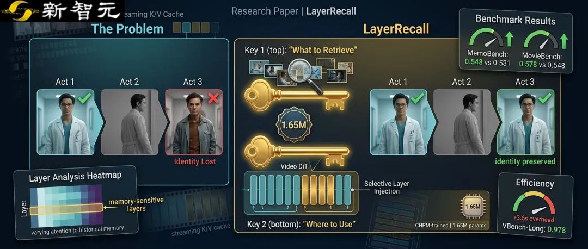

新智元报道
新智元报道

你以为，AI只要能连续生成一分钟视频，就算解决了「长视频」？
真正的考验，往往发生在主角离开镜头之后。
第一幕，一个穿特定服装的人出现在实验室；第二幕，他离开画面；第三幕再次返回时，模型可能已经给他换了脸、换了衣服，甚至把原本应该回来的物体也一起「忘」了。
原因并不神秘。自回归视频模型通常一段一段生成画面，并用Key-Value（KV）缓存保存上下文。为了把计算量控制住，缓存往往优先保留最近片段。短期动作是连上了，但更早的身份、属性和场景线索也可能被挤出去。
近日，浙江大学与香港大学团队提出LayerRecall：不把整段历史一股脑塞回模型，而是同时回答两个问题——现在该想起什么？这段记忆又该在哪些层里使用？
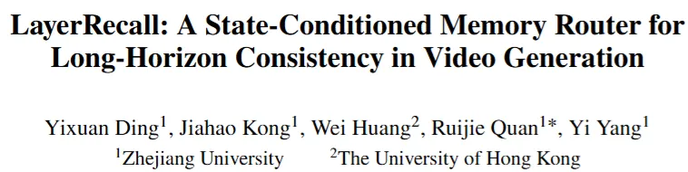
论文地址：https://arxiv.org/abs/2608.28460
项目主页：https://yixuan-ding-zju.github.io/LayerRecall_Web/
GitHub：https://github.com/Yixuan-Ding-ZJU/LayerRecall
模型权重：https://huggingface.co/Yixuan-Ding-ZJU/LayerRecall
LayerRecall让模型不仅会从历史中找回相关记忆，还知道应该把记忆送进哪些视频DiT层。
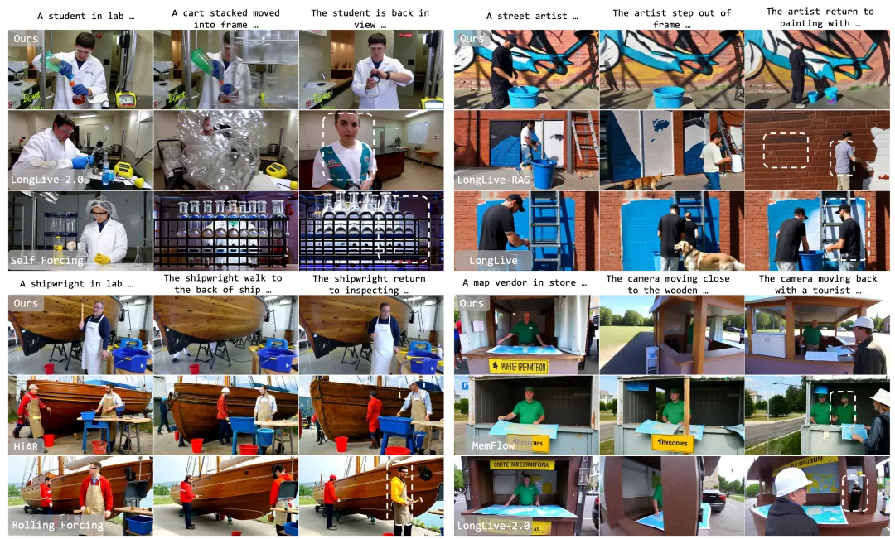
图1 | 论文选取的远期重现对比案例。白色虚线框标出第三镜头需要但未能成功恢复的主体、属性或场景物体；该图是定性对比，不代表全部测试案例的总体胜率（对应论文Fig. 1)。
先看结果：论文表中两个记忆评测Overall第一，基础质量没有被换掉
论文设计了100个未参与训练的三镜头prompt，专门测试主体、颜色、位置和场景四类长时记忆压力，每类25个案例，并与13个长视频生成或记忆增强基线进行比较。
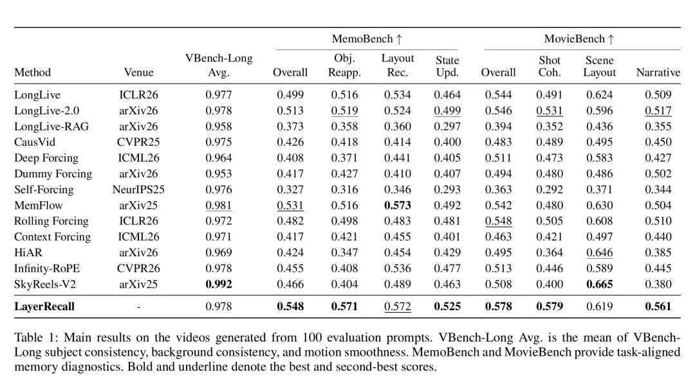
表1｜100个评测prompt上的主结果。粗体和下划线分别代表论文表中最好与第二好成绩（对应论文Table 1）。
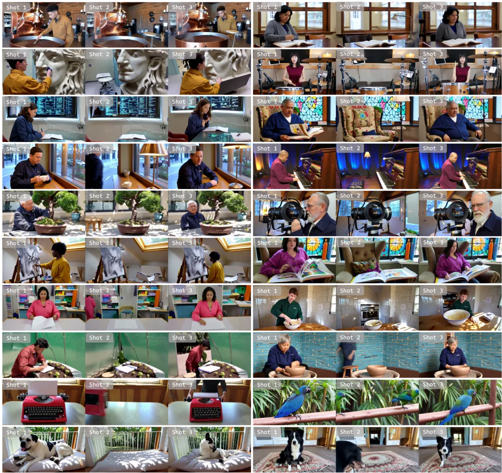
图2｜LayerRecall在多组「出现—离场—返回」三镜头任务中的生成结果，覆盖主体身份、颜色属性、关键物体与场景布局的远期召回（对应论文Fig. 5）。
在这套评测协议和所比较方法中，LayerRecall的MemoBench Overall达到0.548，高于最佳基线MemFlow的0.531；MovieBench Overall达到0.578，高于最佳基线Rolling Forcing的0.548。
与此同时，LayerRecall的VBench-Long平均分为0.978，与LongLive-2.0骨干持平。它不是VBench-Long全表第一，但至少在论文报告的设置里，长程召回能力的提升没有以降低自身骨干的这项平均表现为代价。
额外路由也不是「零成本」。匹配H100设置下，端到端生成时间从305.9秒增加到309.4秒，增量约3.5秒；解码帧吞吐从5.22 FPS变为5.16 FPS。
一句话概括：LayerRecall追求的不是让模型回看更多，而是让它更有选择地回忆。
反直觉发现：记忆不是越多越好，更不能每层都塞
很多人第一反应是：既然模型会忘，那就扩大缓存，或者让每一层都读取远期历史。
但视频DiT内部并不是整齐划一的「同一种大脑」。团队对LongLive-2.0逐层分析后发现，有些层更依赖当前与近期画面，负责维持姿态、运动和局部连续性；另一些层才会对远期历史投入更多注意力。
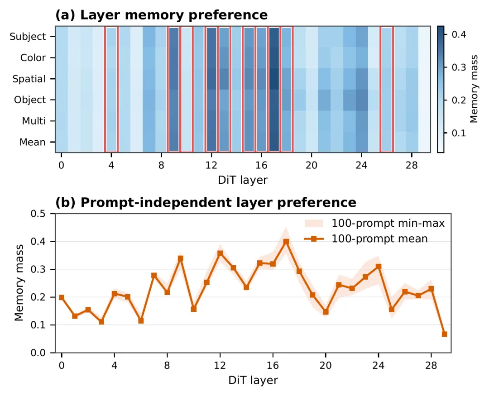
图3｜LongLive-2.0不同DiT层分配给历史记忆的注意力占比并不相同，红框标出论文最终采用的记忆敏感层（对应论文Fig. 2）。
类似的层间差异也出现在论文测试的LongLive和Self-Forcing骨干中，但峰值位置并不完全相同。这意味着「哪一层需要长时记忆」与具体骨干有关，不能把同一组层位置当成所有视频模型的通用答案。
更关键的是，如果把历史K/V注入所有层，远期线索可能反过来打乱当前运动。论文的All-Layer Routing对照正说明了这一点：模型有了更多历史，却更容易出现突变和时间抖动。

LayerRecall把长视频记忆拆成两条路线。
第一把钥匙：What to Retrieve，决定现在该想起什么。
系统为历史chunk建立紧凑摘要。当前画面到来后，路由器读取当前隐藏状态，形成随生成内容变化的查询，再从历史候选中找出最相关的记录。
这里有个技术细节很重要：摘要只负责检索打分，真正送入注意力计算的仍是被选中chunk的完整K/V。 换句话说，它用小索引找资料，却不会只把「内容摘要」交给生成模型。
第二把钥匙：Where to Use，决定记忆送进哪些层。
被选中的记忆敏感层可以同时看到sink、检索历史和当前chunk；其他层继续使用原来的局部滑动窗口。这样一来，负责远期身份和属性的层能拿到旧线索，负责当前动作的层则不会被迫反复「回忆过去」。
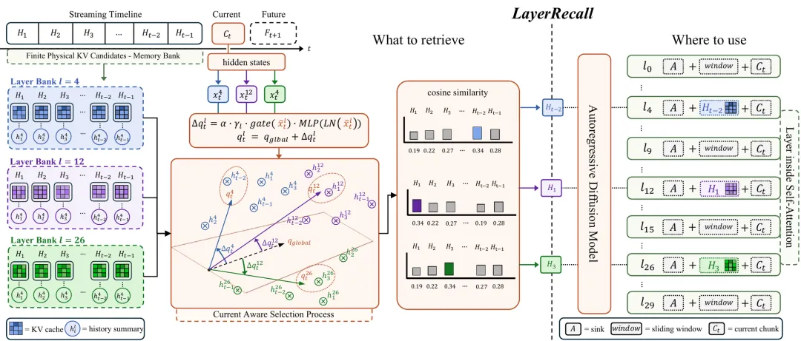
图4｜LayerRecall同时解决「检索哪段历史」与「在哪些层使用」。动态变化的是历史检索，使用哪些层则是预先分析并固定的骨干特定策略（对应论文Fig. 3）。
这也澄清了一个容易产生的误解：LayerRecall并不是每一步都动态选择网络层。当前状态动态控制的是「取什么」，「在哪里用」则来自针对具体骨干的层策略。
训练记忆路由器还有一个难题：现实中没有人逐帧标注「此刻应该找回第几个历史chunk」。高质量长视频训练样本本来就稀缺，显式记忆分配标签更不存在。
为此，论文提出Cross-Horizon Prediction Matching（CHPM）。它使用同一个冻结视频骨干构造一位「看得更远的老师」和一位「记忆受限的学生」。teacher最多可见384个latent frames的长历史；student单次注意力可见预算只有32帧，只能依靠局部上下文和LayerRecall补回关键信息。
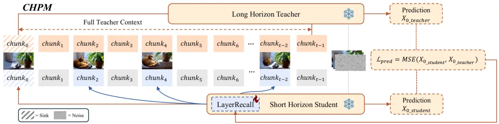
图5｜长上下文teacher监督受限记忆student；生成骨干保持冻结，只训练LayerRecall路由器（对应论文Fig. 4）。
CHPM不要求student复制teacher的注意力图，也不需要知道teacher究竟用了哪一段历史。它只比较两者面对相同噪声、文本条件和扩散时间步时的去噪预测，让路由器自己找到能缩小预测差距的记忆选择。
同样使用十个记忆层时，随机初始化路由器的MemoBench Overall为0.519，经过CHPM训练后达到0.548。整套训练只优化约165万参数的视频记忆路由模块，5B生成骨干、文本编码器和VAE均被冻结。
项目主页还展示了一个很有意思的案例：人物第一幕穿着蓝色内搭，离场后重新出现时，内搭一度变成错误的浅色花纹；随着人物在当前镜头中变得更清晰，服装颜色和纹理又恢复到历史外观，而动作、人物身份和场景没有整体重置。
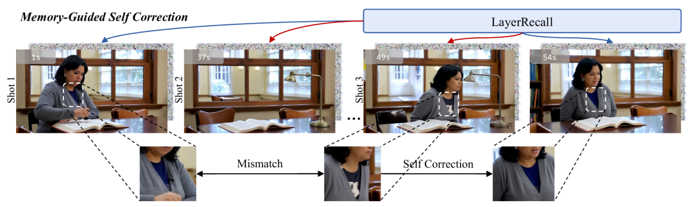
图6｜一个局部属性由mismatch恢复为历史外观的代表案例（对应论文补充材料）。
作者将其解释为：当前状态越来越明确后，查询更容易对齐到正确历史，记忆敏感层据此修复局部属性，其余层继续维护正在发生的运动。
不过，这里需要留一条边界：LayerRecall并不显式检测「哪里生成错了」；目前展示的是与机制一致的行为案例，不是已完成因果验证的纠错模块。
选择性注入带来的稳定性也能从频谱中看到。相较所有层统一读取历史，LayerRecall把2–12 Hz高频帧变化功率比从0.60降到0.38，相邻帧CLIP和DINO一致性也同步提高。
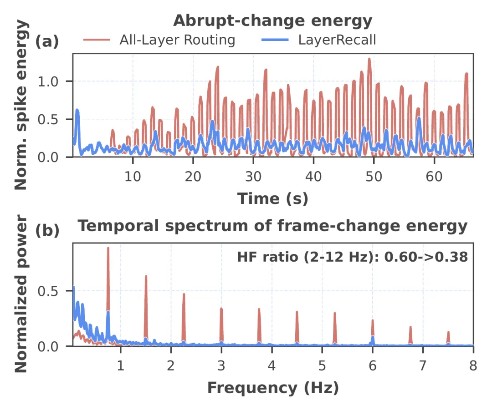
图7｜相较All-Layer Routing，LayerRecall出现更少的突变峰值，高频帧变化功率比由0.60降至0.38（对应论文Fig. 6）。
团队还把训练好的LayerRecall路由参数直接迁移到LongLive和Self-Forcing，不再重新优化路由器，只改用目标骨干自己的记忆层profile。
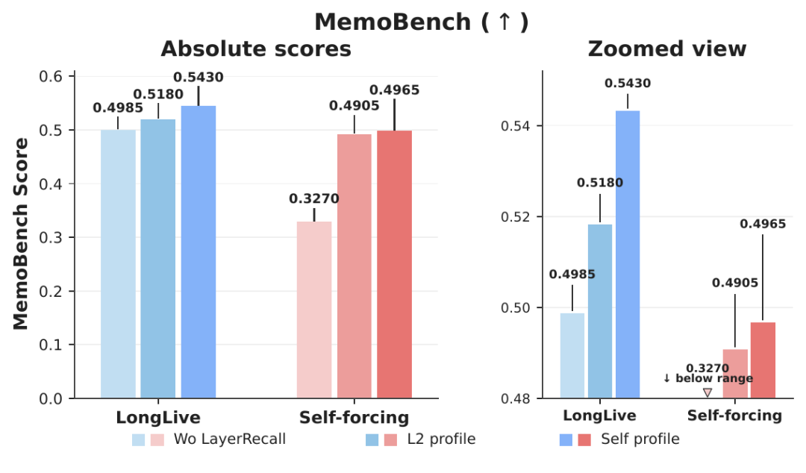
图8｜同一路由器在LongLive与Self-Forcing上的零再训练迁移；Self profile表示使用目标骨干自己的层策略（对应论文Fig. 7）。
LongLive的MemoBench Overall由0.4985提升到0.5430，Self-Forcing由0.3270提升到0.4965。结果支持LayerRecall在这两个被测试骨干上的迁移能力，但还不能外推为对任意视频生成模型都能「即插即用」。
6.6MB权重开源，训练和推理链路一并放出
这次公开的不是一个只有6.6MB的完整视频模型，而是一份叠加在Wan2.2-TI2V-5B与LongLive-2.0之上的轻量路由权重：layer_recall_chpm_v3_step200.pt。
它包含1,648,416个可训练参数，约占5B骨干参数量的0.033%，文件大小约6.6MB。
GitHub仓库不只提供推理脚本，还公开了CHPM训练、hard/soft选择、SP/DP与多机配置、Streaming Ulysses、精确断点恢复审计、CPU/分布式/CUDA测试，以及100组三镜头评测prompt。
开源门槛也要说清：用户仍需分别准备Wan2.2-TI2V-5B和LongLive-2.0基础权重；默认约64秒、24 FPS的视频配置使用两张GPU，分别运行DiT和流式VAE；公开的是评测prompt bank，不是完整CHPM训练数据；项目主页目前提供视频展示，而不是在线生成Demo。
LayerRecall给长视频生成带来的启发，或许不是简单地「增加记忆容量」，而是给有限记忆做一次更聪明的调度：合适的内容，在合适的时刻，交给合适的网络层。
当视频模型开始生成越来越长、越来越复杂的故事，真正决定角色能否始终「还是那个人」的，可能不只是画面质量，还有它究竟会不会正确地回忆。
参考资料：
https://arxiv.org/abs/2608.28460
编辑：LRST